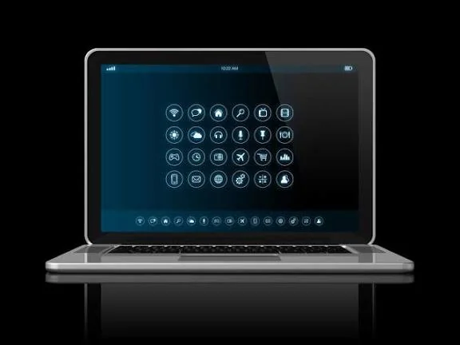
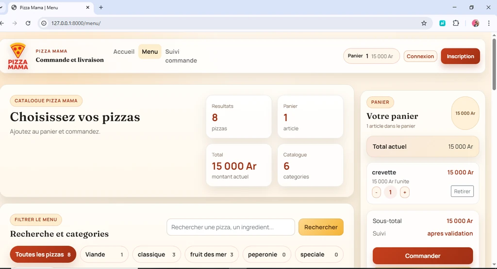

Je transforme un besoin métier en produit web ou mobile concret, avec une attention particulière à la clarté de l'interface, à la maintenance et à l'autonomie du client.

À propos
Un profil orienté vers la réalisation
Je me spécialise dans le développement web et mobile, avec des compétences en AngularJS, PHP, MySQL, Django, Java et Kotlin. J'aime construire des projets concrets : sites de commande, application de gestion, interface d'administration et outils utiles au quotidien.
Je m'intéresse également au travail indépendant, avec une approche simple : comprendre le besoin, cadrer la solution, puis livrer un résultat que le client peut utiliser facilement.
Ce que je peux livrer
Site vitrine, back-office, application de gestion, prototype web ou mobile.
Ma priorité
Une interface lisible, des fonctionnalités utiles et une base facile à faire évoluer.
Ce que montre ce portfolio
Des projets présentés comme de véritables études de cas : contexte, défi, solution et résultat.
Portfolio
Études de cas
Je présente ici mes projets les plus documentés sous forme d'études de cas visuelles. Chaque page détaille le contexte, les choix réalisés, les captures et la valeur apportée.

Étude de cas 01
RealiZen-AI, assistant web de génération d'idées
Un MVP full-stack qui transforme une question vague en réponse utile, accompagnée de variantes, d'un plan d'action et d'une conversation persistante, avec une IA locale et des exports exploitables.
Défi : Passer d'un simple appel à une IA à une application claire, sécurisée et réutilisable par un utilisateur.
Solution : Une interface React/Vite avec authentification JWT, réponse en streaming, historique réutilisable et backend Django REST connecté à Ollama en local.
Résultat : L'utilisateur peut se connecter, poser une question, poursuivre la conversation, retrouver ses idées et exporter le contenu généré.
React, Vite, Django REST, MySQL, Ollama, JWT, SSE

Étude de cas 02
DeliverPro, plateforme de gestion de livraison
Une solution complète avec back-office desktop, API métier et application Flutter pour piloter les commandes, les partenaires, les finances et le travail terrain.
Défi : Éviter de gérer l'activité avec plusieurs fichiers, vues et outils dispersés.
Solution : Un back-office React + Electron pour l'administration, une API Django REST sécurisée par JWT et une application Flutter pour les parcours administrateur et livreur.
Résultat : Un même socle technique pour piloter le back-office, exposer la logique métier et faire progresser les livraisons depuis un appareil mobile.
React, Vite, Electron, Django REST, PostgreSQL, Flutter, JWT

Étude de cas 03
Site de commande pour restaurant
Un site web conçu pour rendre un restaurant plus visible, présenter son menu et recevoir des commandes dans une interface simple à administrer.
Défi : Mettre le menu en ligne et permettre au client de gérer son contenu sans aide technique.
Solution : Un frontend clair pour les visiteurs et une administration sur mesure sous Django.
Résultat : Le restaurant peut mettre à jour ses catégories et ses produits, puis suivre les commandes.
HTML, CSS, Django, Python

Étude de cas 04
Application de gestion des revenus et dépenses
Une application de suivi budgétaire qui centralise les transactions, automatise le calcul du solde et rend l'analyse financière plus lisible.
Défi : Rendre le suivi financier simple, clair et exploitable au quotidien.
Solution : Une interface Streamlit reliée à une API et à des graphiques pour mieux lire les données.
Résultat : Les revenus, les dépenses et les tendances sont visibles dans un seul espace.
Streamlit, Plotly, FastAPI, Python
Contact
Discutons de votre projet
Si vous avez besoin d'un site web, d'une application ou d'une interface de gestion, je peux vous aider à cadrer le besoin et à réaliser une solution concrète.
Parlons de votre projet

Besoin d'un site web, d'une interface de gestion ou d'une application simple à utiliser ? Je peux vous aider à cadrer le besoin, puis à réaliser une solution concrète.
Contactez-moi par e-mail ou directement par téléphone au +261 37 78 17 771.